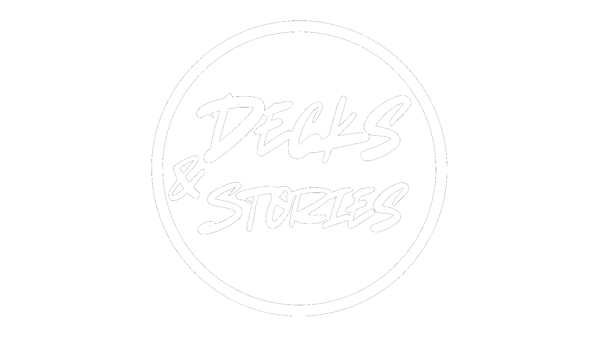

Our mission is to connect the world through music.
Only 6 out of 195 countries so far—still a long way to go!
Hit us up if you’d like to collaborate and grow together!
Where music reveals identity.
A movement of sound and story.